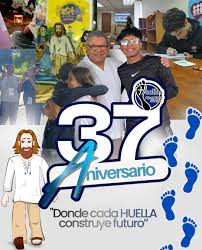

Pastoral Juvenil Ignaciana
Movimiento Juvenil Huellas
Movimiento de formación en valores y liderazgo cristiano con espiritualidad ignaciana. A través de etapas formativas (Huellas Blancas, Azules, Rojas y Doradas), campamentos, misiones y proyectos sociales, los jóvenes descubren su vocación de ser líderes transformadores y caminantes tras los pasos de Jesús.
Únete al grupo
Para integrarte, este es el contacto del grupo:
Coordinador
César Meléndez
Teléfono / WhatsApp
0414-5657512
Encuentro
Sábados 3:00 PM
Lugar
Salones Pastorales
Puedes escribir directamente al coordinador por WhatsApp.